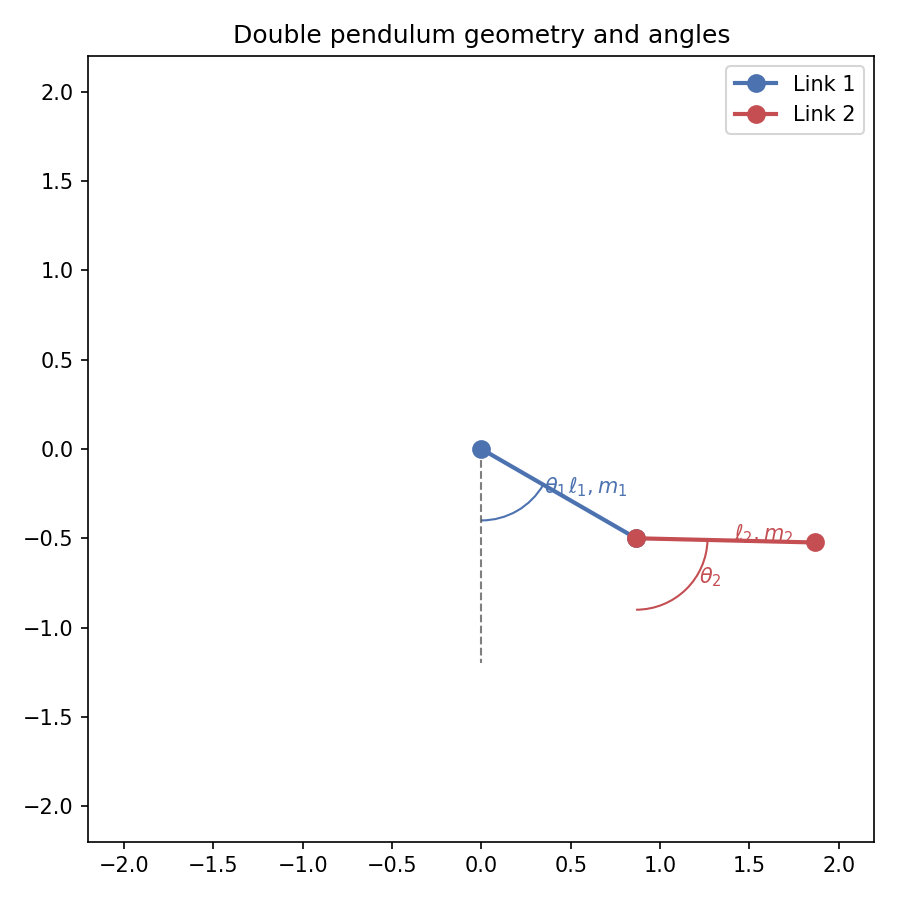
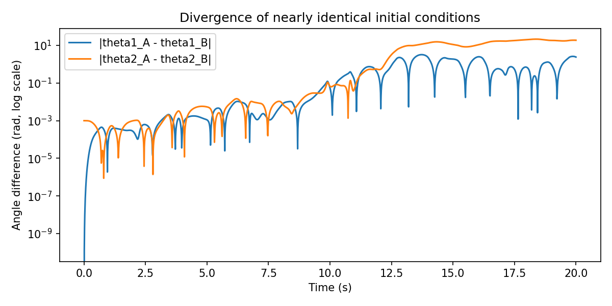
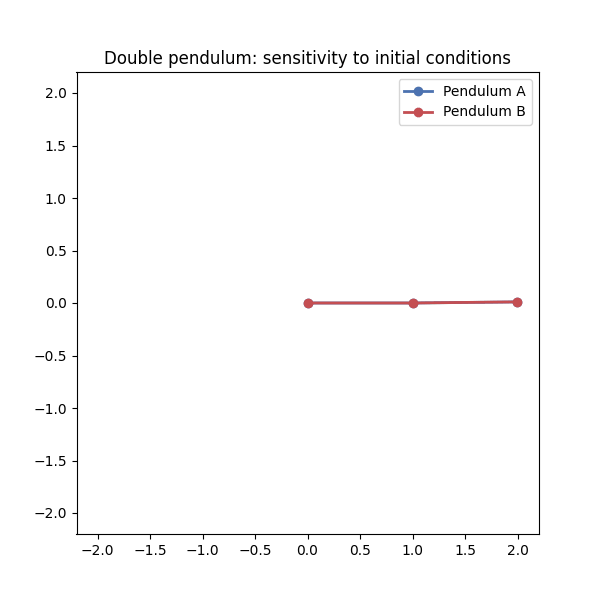

Double Pendulum via Lagrangian Mechanics
Goal: derive the equations of motion with the Lagrangian, then simulate two nearly identical initial conditions to show chaotic divergence.
Geometry and coordinates
Two point masses \(m_1, m_2\) on massless rods of lengths \(\ell_1, \ell_2\).
Generalized coordinates: angles \(\theta_1, \theta_2\) measured from the vertical.
{kind=link}

Positions (taking the pivot as the origin, downward is negative \(y\)):
Velocities:
Kinetic and potential energy
The Lagrangian is \(\mathcal{L} = T - V\).
Equations of motion (standard form)
After simplifying Euler–Lagrange equations for \(\theta_1, \theta_2\) and defining \(\omega_1 = \dot{\theta}_1\), \(\omega_2 = \dot{\theta}_2\):
These ODEs are stiff when the denominator approaches zero; a small time step and stable integrator (e.g., RK4) keeps the simulation stable for moderate times.
Numerical simulation recipe
Integrate \([\theta_1, \theta_2, \omega_1, \omega_2]\) with RK4.
Use two initial states that differ by a tiny perturbation to expose sensitivity.
Render both pendulums on the same plot and export to GIF.
Visualization results
Both runs start with \(\theta_1 = \pi/2\), \(\theta_2 = \pi/2 + 0.01\), and the second run perturbs \(\theta_2\) by an extra \(10^{-3}\).
Despite near-identical starts, trajectories quickly diverge.
{kind=link}

{kind=link}

How to reproduce the figures
Run the script that integrates the ODEs and builds the GIF and PNG:
python docs/_static_files/codes/double_pendulum.py
Key points from the script
Uses RK4 with \(\Delta t = 0.005\) over 20 seconds.
Converts angles to Cartesian coordinates for plotting rods and masses.
Uses
matplotlib.animation.PillowWriterto emitdouble_pendulum.gif.Also plots the angle differences \(|\theta_1^{(A)}-\theta_1^{(B)}|\) and \(|\theta_2^{(A)}-\theta_2^{(B)}|\) over time.